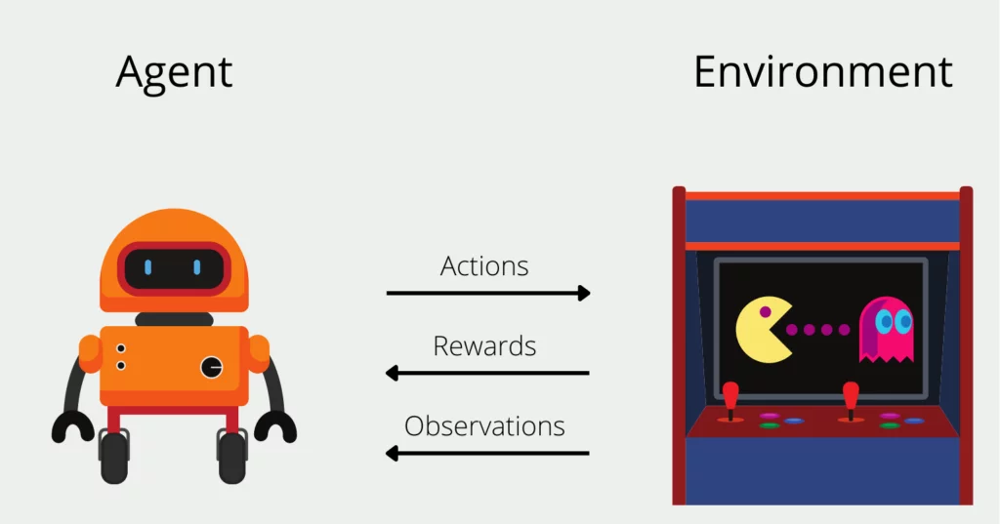
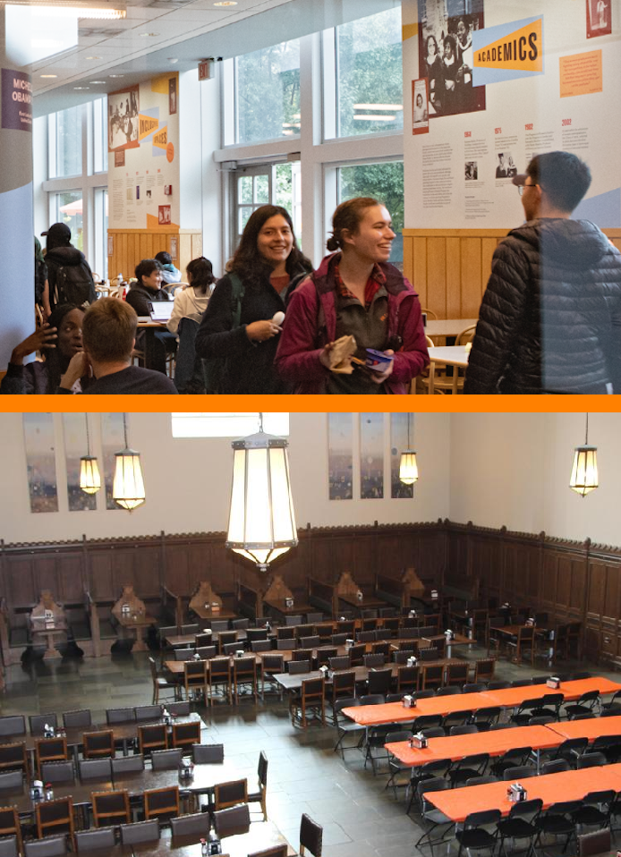
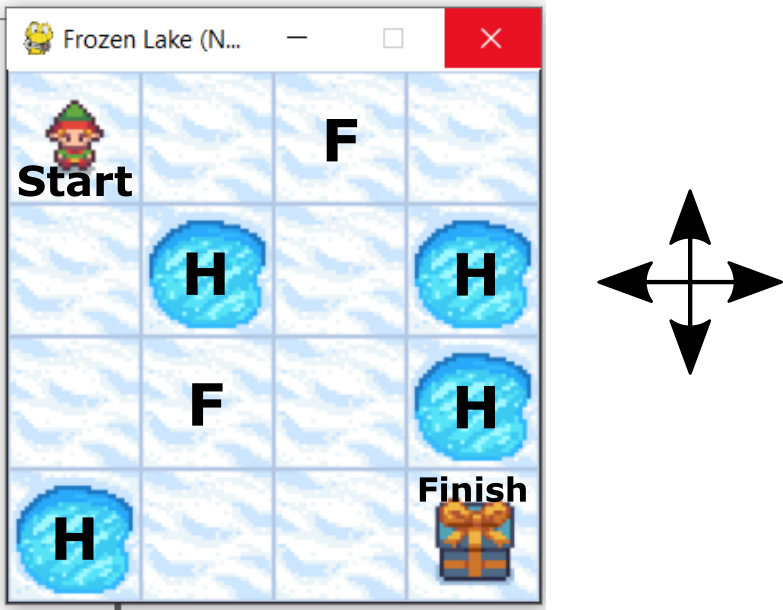
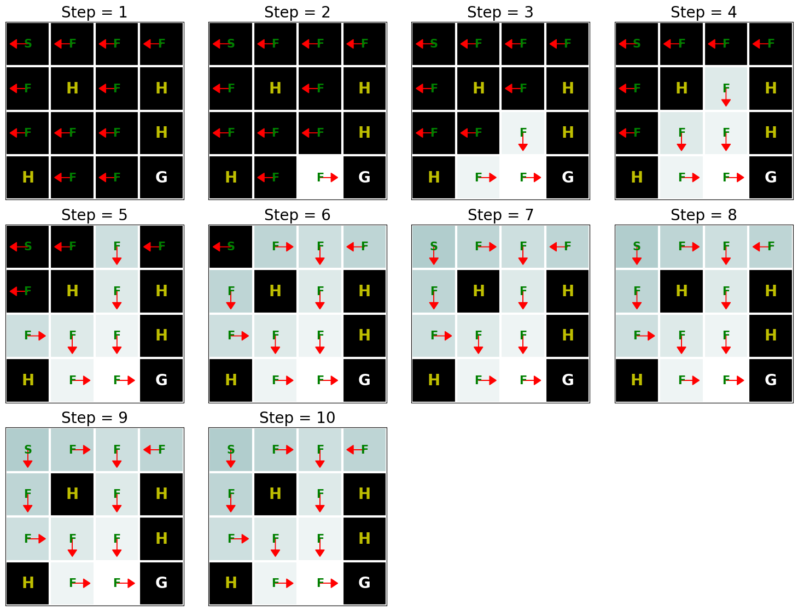

flowchart LR input[hunger] activation[sigmoid] output[residential college] input -- wH + b --> activation activation --> output
19: Reinforcement Learning
Session 19: Reinforcement Learning
Learning objectives:
- Introduce reinforcement learning
- Discuss Markov Decision Processes

- image credit: Data Base Camp
RL in the News
Gym: Mountain Car

- states: \(x\) coordinate
- actions: push left or push right
- reward: given upon reaching top of hill
Case Study: Where to Eat?

- \(F\): choosing to eat at Frist Campus Center
- \(R\): choosing to eat at your residential college
- Input: hunger
\[H \in [0,1]\]
Reward: net satisfaction
- meal size
- distance to food
Example adapted from examples by Professor Josh Starmer
What if we don’t already have training data?
In previous sessions, we trained a model with training data. In particular, we were able to compute a loss function (such as the difference between predictions and observed outputs).
Here, instead, we will use reinforcement learning to employ rewards to help provide signals for the backpropagation.
Neural Network
- linear transformation: \(L = wh + b\) in the fully connected layer
- output: probability of choosing to eat at your residential college (instead of Frist)
- learning rate (hyperparameter): 0.301
Sigmoid instead of ReLU?
Here, I am using the sigmoid activation function instead of the ReLU simply because it is easier in the slides presentation.
- sigmoid
\[A(x) = \frac{1}{1 + e^{-x}} \text{ with }\frac{dA}{dx} = \sigma(x)(1 - \sigma(x))\] * ReLU
\[f(x) = \text{max}(x,0) \text{ with } f'(x) = \begin{cases} 1, & x > 0 \\ 0, & x \leq 0 \end{cases}\]
Forward Propagation
Suppose that you are not hungry (\(H = 0\)) but you still want to eat some dinner at this time.
- initialized as \(w = 20\) and \(b = 0\)
- we will train for the bias value
- we don’t know the meal satisfaction in advance
flowchart LR input[H = 0] activation[sigmoid] output[residential college] input -- 20H + 0 --> activation activation --> output
So far, our distribution of choices is
- \(P(\text{residential college}) = A(0) = \frac{1}{1 + e^{-0}} = 0.5\)
- \(P(\text{Frist}) = 1 - P(\text{residential college}) = 0.5\)
whose \([0,1]\) probability space can be mapped as
- \([0, 0.5)\): go to Frist
- \((0.5, 1.0]\): go to your residential college
Now, suppose that we used a random number generator and obtained 0.2025. Thus, we are visiting Frist.
Cross Entropy
We will use cross entropy to measure the loss.
\[C_{\text{res}} = -\ln(P(\text{res}))\] \[C_{\text{Frist}} = -\ln(1 - P(\text{res}))\]
Chain Rule
Toward using the output to train the bias, we examine the chain rule to apply the change in the cross entropy with respect to the bias.
\[\begin{array}{rcl} \frac{dC_{\text{Frist}}}{db} & = & \frac{dC_{\text{Frist}}}{dP(\text{res})} \cdot \frac{dP(\text{res})}{dL} \cdot \frac{dL}{db} \\ ~ & = & \frac{1}{1 - P(\text{res})} \cdot P(\text{res}) \cdot (1 - P(\text{res})) \cdot (1) \\ ~ & = & 0.5 \\ \end{array}\]
Signs
If we were training a simple neural network
- negative derivative –> decrease parameter
- positive derivative –> increase parameter
Rewards
However, we need to incorporate the possible rewards
\[\text{updated derivative} = \text{derivative}*\text{reward}\]
Rewards
In this scenario, let us assign the rewards as follows
If hunger = 0 and we choose Frist: reward = 1.0
- perhaps valued location over quantity of food
If hunger = 0 and we choose the residential college: reward = -1.0
How are reward amounts chosen?
For now, we note that reward amounts do not have to be \(\pm 1.0\). Amounts can be weighted to give more priority to certain outcomes.
Thus, in our scenario here, our updated derivative is
\[\begin{array}{rcl} \text{updated derivative} & = & \text{derivative}*\text{reward} \\ ~ & = & (0.5)(1.0) \\ ~ & = & 0.5 \end{array}\]
Update
\[\begin{array}{rcl} \text{step size} & = &\text{learning rate}*\text{updated derivative} \\ ~ & = & (0.301)(0.5) \\ ~ & = & 0.1505 \\ \end{array}\]
\[\begin{array}{rcl} \text{updated bias} & = & \text{old bias} - \text{step size} \\ ~ & = & 0.0 - 0.1505 \\ ~ & = & -0.1505 \\ \end{array}\]
flowchart LR input[H = 0] activation[sigmoid] output[residential college] input -- 20H - 0.1505 --> activation activation --> output
Now, our distribution of choices is
- \(P(\text{residential college}) = A(-0.1505) = \frac{1}{1 + e^{0.1505}} \approx 0.4624\)
- \(P(\text{Frist}) = 1 - P(\text{residential college}) \approx 0.5376\)
whose \([0,1]\) probability space can be mapped as
- \([0, 0.5376)\): go to Frist
- \((0.5376, 1.0]\): go to your residential college
Second Epoch
Now, suppose that we used a random number generator and obtained 0.678. Thus, we are visiting your residential college.
- \(P(\text{residential college}) = A(-0.1505) = \frac{1}{1 + e^{0.1505}} \approx 0.4624\)
- \(P(\text{Frist}) = 1 - P(\text{residential college}) \approx 0.5376\)
\[\begin{array}{rcl} \frac{dC_{\text{res}}}{db} & = & \frac{dC_{\text{res}}}{dP(\text{res})} \cdot \frac{dP(\text{res})}{dL} \cdot \frac{dL}{db} \\ ~ & = & \frac{-1}{P(\text{res})} \cdot P(\text{res}) \cdot (1 - P(\text{res})) \cdot (1) \\ ~ & = & -0.5376 \\ \end{array}\]
But eating at the residential college when you are not hungry was assigned a reward value of -1.0.
\[\begin{array}{rcl} \text{updated derivative} & = & \text{derivative}*\text{reward} \\ ~ & = & (-0.5376)(-1.0) \\ ~ & = & 0.5376 \end{array}\]
\[\begin{array}{rcl} \text{step size} & = &\text{learning rate}*\text{updated derivative} \\ ~ & = & (0.301)(0.5376) \\ ~ & \approx & 0.1618 \\ \end{array}\]
\[\begin{array}{rcl} \text{updated bias} & = & \text{old bias} - \text{step size} \\ ~ & = & -0.1505 - 0.1618 \\ ~ & = & -0.3123 \\ \end{array}\]
flowchart LR input[H = 0] activation[sigmoid] output[residential college] input -- 20H - 0.3123 --> activation activation --> output
After the second epoch, our distribution of choices is
- \(P(\text{residential college}) = A(-0.3123) = \frac{1}{1 + e^{0.3123}} \approx 0.4226\)
- \(P(\text{Frist}) = 1 - P(\text{residential college}) \approx 0.5774\)
whose \([0,1]\) probability space can be mapped as
- \([0, 0.5774)\): go to Frist
- \((0.5774, 1.0]\): go to your residential college
That is, in situations without hunger, your chance of choosing dining at your residential college is decreasing.
Many Epochs
Assuming that we can get data from many dinners (and/or many students), the neural network would be trained over
- many epochs
- many values for hunger (\(H \in [0,1]\))
and would perhaps converage toward
flowchart LR input[H] activation[sigmoid] output[residential college] input -- 20H - 10 --> activation activation --> output
\[\begin{array}{rcl} H \in [0, 0.5) & \rightarrow & \text{prefer Frist} \\ H \in (0.5, 1.0] & \rightarrow & \text{prefer residential college} \\ \end{array}\]
SAR
To rigorously formulate the concepts of reinforcement learning, we think of states, actions, and rewards.
For some terminology,
- \(\mathcal{S}\): set of states
- \(\mathcal{A}\): set of actions
- distribution: \(P(s'|s,a)\)
- reward: \(r(s,a)\)
MDP
Together we have a Markov decision process (MDP).
\[\text{MDP}: (\mathcal{S}, \mathcal{A}, T, r)\]
Starting at an initial state \(s_{0}\), a trajectory happens over time \(t\)
\[t \in \{0, 1, 2, ... , T\}\]
(where \(T\) is the terminal time) and looks like
\[\tau = (s_{0}, a_{0}, r_{0}, s_{1}, a_{1}, r_{1}, s_{2}, a_{2}, r_{2}, ...)\]
Markov assumption
Recall at for a Markov process, we assume that the present iteration (i.e. its probabilities) depend only on the previous iteration
\[P(s_{t}|s_{t-1}, a_{t-1})\]
In terms of random variables, the trajectories are
\[\tau \in (S_{0}, A_{0}, R_{0}, S_{1}, A_{1}, R_{1}, S_{2}, A_{2}, R_{2}, ...)\]
Return
The return of a trajectory is the total of the rewards
\[r_{0} + \gamma r_{1} + \gamma^{2}r_{2} + \gamma_{3}r_{3} + ... = \displaystyle\sum_{t = 0}^{T} \gamma^{t}r_{t}\]
where \(\gamma \in [0,1]\) is the discount rate.
Goal
The goal in reinforcement learning is to seek out a policy \(\pi\) that maximizes the return.
From a later moment in time (i.e. not the initial state), we can think of the return as
\[G_{t} = \displaystyle\sum_{k = t+1}^{T} \gamma^{k - t - 1}R_{k}\]
and then the goal can be expressed as
\[\text{max}_{\pi} \text{E}_{\pi}[G_{t}]\]
Ethics Corner: Training Data with Human Subjects
Bellman Equations
State and Action Functions
State Value Function
\[v_{\pi}(s) = \text{E}[G_{t}|S_{t} = s]\]
is the value of being at state \(s\), and is defined as the expected value of the return given that we are at state \(s\).
Action Value Function
\[q_{\pi}(s,a) = \text{E}[G_{t}|S_{t} = s, A_{t} = a]\]
is the expected return given that we are at state \(s\) and take action \(a\).
Optimal Policy
There exists an optimal policy \(\pi_{*}\) where
\[\begin{array}{rclc} v_{\pi_{*}}(s) & \geq & v_{\pi}(s) & \forall s \forall \pi \\ q_{\pi_{*}}(s,a) & \geq & q_{\pi}(s,a) & \forall s \forall a \forall \pi \\ \end{array}\]
To iterate toward an optimal policy, we try dynamic programming.
Dynamic Programming
Here, dynamic programming will assume complete knowledge of the Markov decision process, where
- state space \(S\) is finite
- state space is discrete
- temporal space is finite (i.e. \(T < \infty\))
Dynamic programming can rely on knowing distribution
\[P(s', r| s,a)\]
Bellman optimality says that the agent must choose an action that has the maximum value. Computing total probabilities yields
Forming the Bellman Equations
\[\begin{array}{c|rcl} (1) & v_{\pi}(s) & = & \displaystyle\sum_{a\in\mathcal{A}(s)} \pi(a|s)q_{\pi}(s,a) \\ (2) & q_{\pi}(s,a) & = & \displaystyle\sum_{\begin{array}{c} s'\in\mathcal{S} \\ r\in\mathcal{R}\end{array}} p(s',r|s,a)[r + \gamma v_{\pi}(s')] \end{array}\]
- If we substitute (2) into (1), we can form the Bellman Equation for state values that relates any state value from any state value one step away:
\[v_{\pi}(s) = \displaystyle\sum_{a\in\mathcal{A}(s)} \pi(a|s)\displaystyle\sum_{\begin{array}{c} s'\in\mathcal{S} \\ r\in\mathcal{R}\end{array}} p(s',r|s,a)[r + \gamma v_{\pi}(s')]\]
- If we substitute (1) into (2), we can form the Bellman Equation for action values that relates any action value to any action value one step away:
\[q_{\pi}(s,a) = \displaystyle\sum_{\begin{array}{c} s'\in\mathcal{S} \\ r\in\mathcal{R}\end{array}} p(s',r|s,a)\left[r + \gamma \displaystyle\sum_{a'\in\mathcal{A}(s')} \pi(a'|s')q_{\pi}(s',a')\right] \]
Bellman’s contribution
For a Markov decision process (MDP) where we know the distribution of possible states, the Bellman equations above all us to compute any state value or any action value from all of the other information.
Recursion
The derivation of equation (2) above involves how the returns
\[G_{t} = R_{t+1} + \gamma G_{t+1}\] Then, the expected values are
\[\begin{array}{rcl} \text{E}[G_{t}|s,a] & = & \text{E}[R_{t+1} + \gamma G_{t+1}|s,a] \\ ~ & = & \text{E}[R_{t+1} + \gamma v_{\pi}(S_{t+1})|s,a] \\ \end{array}\]
One cannot say that distributions \(G_{t+1} = v_{\pi}(S_{t+1})\), but we are allowed to equate the expected values!
Policy Improvement
Definition
If we have the state value function \(v_{\pi}(s)\), and assuming a deterministic policy (i.e. \(a = \pi(s)\)), an optimal policy is defined as
\[\pi_{*}(s) = \text{argmax}_{a} q_{*}(s,a)\] We define a new policy \(\pi'\) as
\[\pi'(s) = \text{argmax}_{a} q_{\pi}(s,a)\]
and due to the Policy Improvement Theorem, we are assured that
\[v_{\pi'}(s) \geq v_{\pi}(s) \quad \forall s \in \mathcal{S}\]
GPI
For Generalized Policy Iteration, we hope to converge to the optimal policy \(\pi_{*}\) and optimal state value function \(v_{*}\).
“Almost all reinforcement learning methods are well described as GPI” — Simon and Barto
Gym: Frozen Lake

- image credit: Alexandar Haber
- start at square “S”
- can move up, down, left, or right from frozen squares “F”
- trajectory ends at holes (“H”) with negative reward
- trajectory ends at finish with positive reward
Iterate until policy converges.


- image credit: Dive into Deep Learning
Quo Vadimus?
due this Friday (April 11):
- Precept 9
- Data Glimpse
- semester projects will be due May 10
Footnotes
(optional) Additional Resources and References
Reinforcement Learning from the Dive into Deep Learning book
Reinforcement Learning with Neural Networks by Josh Starmer
Simple Reinforcement Learning by Machine Yearner
Train an AI Agent to play Mountain Car with RL by Yu-Kai “Steven” Wang
Session Info
sessionInfo()R version 4.4.2 (2024-10-31 ucrt)
Platform: x86_64-w64-mingw32/x64
Running under: Windows 10 x64 (build 19045)
Matrix products: default
locale:
[1] LC_COLLATE=English_United States.utf8
[2] LC_CTYPE=English_United States.utf8
[3] LC_MONETARY=English_United States.utf8
[4] LC_NUMERIC=C
[5] LC_TIME=English_United States.utf8
time zone: America/New_York
tzcode source: internal
attached base packages:
[1] stats graphics grDevices utils datasets methods base
loaded via a namespace (and not attached):
[1] htmlwidgets_1.6.4 compiler_4.4.2 fastmap_1.2.0 cli_3.6.3
[5] tools_4.4.2 htmltools_0.5.8.1 rstudioapi_0.17.1 yaml_2.3.10
[9] rmarkdown_2.29 knitr_1.49 jsonlite_1.8.9 xfun_0.50
[13] digest_0.6.37 rlang_1.1.5 evaluate_1.0.3